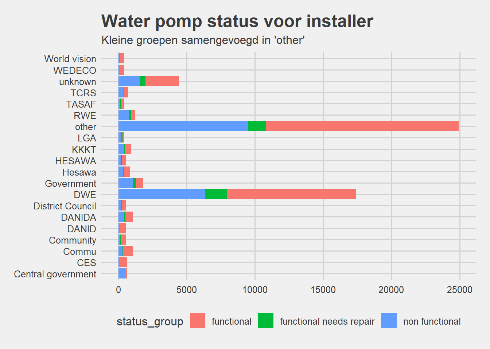

Grouped-variables
Lodewic van Twillert
10/24/2018
Selecting the right features
Selecting the right features is extremely important! Especially in this case where we are dealing with a majority of categorical features. Many of these categorical variables are redundant, so let’s first reduce the dimensionality of the data by selecting the most valuable and unique variables.
Handling feature groups
The variables in the data are far from independent, some variables practically mean the same thing. Some feature groups are so painfully obvious that we should clean these manually before moving on to more generic analyses.
In the Description column, we can see some overlap in values. These features are likely to represent the same variable, so we can reduce the dimensionality of the dataset just by smartly combining some variables.
Let’s start with common sense and group some of the variables manually to prepare the data for more automated pipelines. Here are some logical groups we can check,
- scheme_name, scheme_management, installer, funder
- extraction_type, extraction_type_group, extraction_type_class
- management, management_group
- scheme_management, scheme_name
- payment, payment_type
- water_quality, quality_group
- quantity_quantity_group
- source, source_class
- waterpoint_type, waterpoint_type_group
Scheme_name, scheme_management, installer, funder
These 4 features have far too many unique values to be used as categorical labels. In some cases we can bin groups by grouping the least occurring data as ‘other’, but in these cases the arity is too high.
Together with spelling errors in these labels we won’t spend the effort to transform these values into something more useful with text processing.
The scheme names are a mess. There are non-ambiguous names, spelling errors, numeric values, etc. Values such as like ‘Adra’, ‘ADRA’, ‘WOULD BANK’, etc.. are variations on each other. We can reduce this already by using the lowercase version, but not enough to warrant the inclusion of this variable.
## .
## K None Borehole Chalinze wate
## 28166 682 644 546 405
## M
## 400## .
## VWC WUG Water authority
## 36793 5206 3877 3153
## WUA Water Board
## 2883 2748
## Scheme management in 10 groups accounts for 99.71% of the data. And just VWC is 61.94%Installer and funder
The installer and funder values have many levels. Again a lot of data-entry errors seem apparent in the data, and when transformed to lower-case the installer and funder variables overlap for over 50%. Because of the arity of this data we remove both.
- Possible to do string matching
## .
## DWE Government RWE Commu DANIDA
## 17402 3655 1825 1206 1060 1050## [1] 2146
## .
## Government Of Tanzania Danida
## 9084 3635 3114
## Hesawa Rwssp World Bank
## 2202 1374 1349## Of the 1898 unique funder names, 1065 overlap with the installer names!